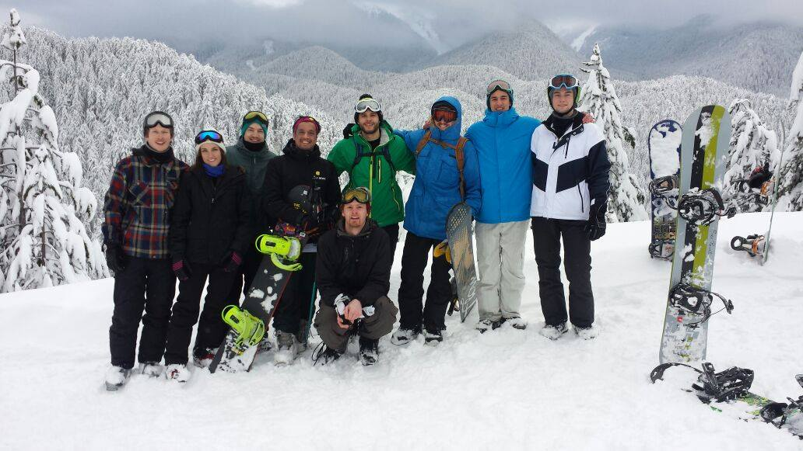
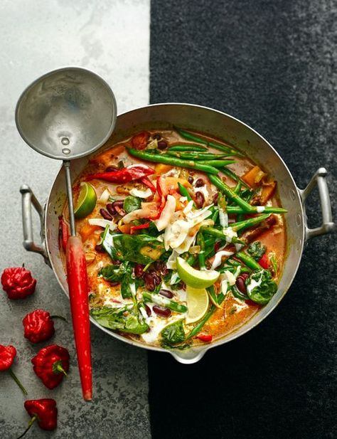

I love music and djing I run my own event called the groove in Nottingham. Playing soulful upbeat disco, afro and south american music usualy in te era of the 70s-90s (when music was good;)).I will use code to build my self a website for my events and a portfolio for myself.
I Love traveling my goal is to see the whole world with my better half. A huge reason coding is so appealing to me is that it is a job you can do in most parts of the world

Although it has been a while I love snowboarding, I simply relish adventures with my friends, and if we cant go anywhere fun then a weekend of board games is my other favourite past time, later down the line, when I become an amazing developer I should have more time and money to do such things.
Working with an Italian Chef. We are currently working on a project we call Medimeals, the aim is to build an easy to acess platform which will show the average person the best possible meals for their illness. The power of code will alow me to build this myself or with others.
